ВЕДОМСТВЕННЫЕ
СТРОИТЕЛЬНЫЕ НОРМЫ
ИНСТРУКЦИЯ
ПО ПРОЕКТИРОВАНИЮ ДВУХСТУПЕНЧАТЫХ
БЕСКОМПРЕССОРНЫХ СИСТЕМ
КОНДИЦИОНИРОВАНИЯ ВОЗДУХА
ВСН 30-77
Госгражданстрой
МОСКВА 2001
Утверждена приказом
Государственного комитета
по гражданскому строительству
и архитектуре при Госстрое СССР
от 7 февраля 1977г. № 29
Настоящая Инструкция разработана ЦНИИЭП инженерного
оборудования Госгражданстроя.
Инструкция содержит материалы по проектированию
двухступенчатых бескомпрессорных систем кондиционирования воздуха (БСКВ).
Редакторы инж. И.А. Уланова
(Госгражданстрой), канд. техн. наук Л.М. Зусманович, инженеры З.П.
Добрынина, Т.Ю. Кулжинская (ЦНИИЭП инженерного оборудования.
Государственный комитет по гражданскому
строительству и архитектуре при Госстрое СССР
|
Ведомственные строительные нормы
|
ВСН 30-77
Госгражданстрой
|
|
Инструкция по проектированию двухступенчатых
бескомпрессорных систем кондиционирования воздуха
|
-
|
1.1.
Настоящая Инструкция распространяется на проектирование двухступенчатых
бескомпрессорных систем кондиционирования воздуха (БСКВ), предназначенных для
применения во вновь строящихся и реконструируемых общественных зданиях, в
производственных и вспомогательных зданиях промышленных предприятий, в которых
соответствующими нормативными документами предусматривается кондиционирование
воздуха.
Бескомпрессорные системы кондиционирования воздуха
холодопроизводительностью более 1 гкал/ч должны применяться, как правило, при
технико-экономическом обосновании.
Примечание. При
проектировании двухступенчатых бескомпрессорных систем кондиционирования
воздуха следует руководствоваться также требованиями соответствующих глав СНиП
и других нормативных документов, утвержденных или согласованных с Госстроем
СССР или Госгражданстроем в установленном порядке.
1.2. Двухступенчатые бескомпрессорные системы
кондиционирования воздуха должны применяться для обеспечения в обслуживаемых
помещениях оптимальных или промежуточных между оптимальными и допустимыми
метеорологических условий, а также метеорологических условий по технологическим
требованиям в соответствии с требованиями главы СНиП по проектированию
отопления, вентиляции и кондиционирования воздуха.
|
Внесены ЦНИИЭП инженерного оборудования Госгражданстроя
при Госстрое СССР
|
Утверждены приказом Государственного комитета по
гражданскому строительству и архитектуре при Госстрое СССР от 7 февраля 1977
г. № 29
|
Срок введения в действие 1 июля 1977 г.
|
1.3. Двухступенчатые бескомпрессорные системы
кондиционирования воздуха не следует применять в районах с влажным климатом,
где расчетные параметры наружного воздуха теплого периода года, соответствующие
параметрам Б, превышают каждый в отдельности следующие значения:
относительная влажность - 65 %,
температура точки росы - 18 °С.
2.1.
Двухступенчатые бескомпрессорные системы кондиционирования воздуха следует
проектировать с применением приточных и испарительных кондиционеров. При
проектировании следует применять двухступенчатые бескомпрессорные системы,
схемы которых приведены на рис. 1 и 2, принцип работы - в прил. 1, а
методика и примеры расчетов - в прил. 2 и 3.
2.2. Схему, приведенную на рис. 1, как правило, следует применять при кондиционировании
воздуха в одном или нескольких помещениях, в которых при подаче воздуха с
одинаковыми параметрами должны быть обеспечены требуемые метеорологические
условия.
Приточный и испарительный кондиционеры (рис. 1)
следует проектировать равной производительности по воздуху.
2.3. При проектировании двухступенчатых бескомпрессорных систем
кондиционирования воздуха по схеме, приведенной на рис. 1, приточный
кондиционер в теплый период года должен обеспечивать охлаждение приточного
воздуха в теплообменниках I и II при постоянном его влагосодержании
(сухое охлаждение). Испарительный кондиционер в этот период года должен
обеспечивать охлаждение воды, циркулирующей в теплообменниках I и II
приточного кондиционера.
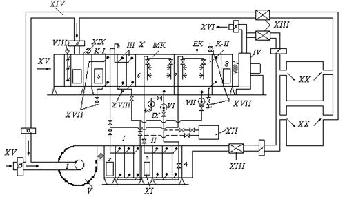
Рис. 1. Рабочая схема двухступенчатой бескомпрессорной
системы кондиционирования воздуха
1, 2,
3, 4 - состояние воздуха при его обработке в приточном
кондиционере; 5, 6, 7, 8 - состояние воздуха при
его обработке в испарительном кондиционере; I, II, III -
теплообменники (воздухоохладители); К-I, K-II - соответственно
теплообменники первого и второго подогрева; МК - оросительная камера
малого контура циркуляции; БК - оросительная камера большого контура
циркуляции; IV, V - соответственно вентиляторы испарительного и
приточного кондиционеров; VI, VII - соответственно циркуляционные
насосы малого и большого контуров циркуляции; VIII - воздушные заслонки;
IX - насос для адиабатического увлажнения воздуха; X -
испарительный кондиционер; XI - приточный кондиционер; XII -
бак-аккумулятор; XIII - шумоглушитель; XIV - вытяжной или
рециркуляционный воздух; XV - наружный воздух; XVI - выброс в
атмосферу; XVII - места присоединения к трубопроводам ТЭЦ; XVIII
- кран для спуска воды из теплообменников; XIX - фильтр; XX -
обслуживаемые помещения
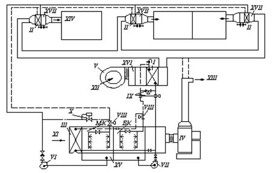
Рис. 2. Рабочая схема бескомпрессорной системы
кондиционирования воздуха при обслуживании разнохарактерных помещений
I, II,
III - теплообменники (воздухоохладители); МК - оросительная
камера малого контура циркуляции; БК - оросительная камера большого
контура циркуляции; IV, V - соответственно вентиляторы
испарительного и приточного кондиционеров; VI, VII -
соответственно циркуляционные насосы малого и большого контуров циркуляции; VIII
- соленоидные клапаны; IX - взаимообратные клапаны; Х -
регуляторы давления; XI - наружный или рециркуляционный воздух; XII
- наружный воздух (в теплый период года); XIII - выброс в атмосферу; XIV
- приток в обслуживаемые помещения; XV - испарительный кондиционер; XVI
- приточный кондиционер; XVII - калорифер; - подающая линия; - - - - - обратная
линия.
2.4. При
проектировании двухступенчатых бескомпрессорных систем кондиционирования
воздуха по схеме, приведенной на рис. 1, в летний период года следует
предусматривать следующие режимы работы:
а) приточного кондиционера: на наружном воздухе или на
смеси наружного и рециркуляционного воздуха;
б) испарительного кондиционера: на рециркуляционном
(вытяжном) воздухе, на наружном воздухе, на смеси наружного и рециркуляционного
воздуха.
2.5. При
теплосодержании вытяжного воздуха меньшем или равном теплосодержанию наружного
воздуха следует предусматривать работу испарительного кондиционера на
рециркуляционном (вытяжном) воздухе. При этом, как правило, он должен выполнять
функции вытяжных систем обслуживаемых помещений.
2.6. В холодный и переходный периоды года испарительный
кондиционер следует применять в качестве приточной установки, обеспечивающей
нагревание приточного воздуха в теплообменниках первого (К-I) и второго
(К-II) подогревов и его адиабатическое увлажнение в оросительной камере МК.
При этом приточный кондиционер не должен работать (рис. 1).
2.7. Теплообменник первого подогрева для холодного и
переходного периодов года следует устанавливать перед теплообменником III
с самостоятельным подключением к тепловой сети (рис. 1).
2.8. В качестве теплообменника первого подогрева
допускается использовать часть поверхности третьего теплообменника. Эту часть
поверхности в холодный и переходный периоды следует подключать к тепловой сети
по схеме, приведенной на рис. 3 и рис. 6,а и б. В теплый период года эта часть
поверхности должна включаться в общую поверхность теплообменника III для
охлаждения воздуха.
2.9. На
горячем и обратном трубопроводах к части поверхности теплообменника III,
используемой в качестве теплообменника первого подогрева в соответствии с п. 2.8
настоящей Инструкции, следует предусматривать установку запорной арматуры на
расстоянии не менее 1,5 - 2 м от теплообменника III.
В холодный и переходный периоды года следует
предусматривать спуск воды из неработающей части теплообменника III
(рис. 3).
2.10. Для
адиабатического увлажнения воздуха в холодный и переходный периоды года следует
использовать камеру орошения МК с установкой отдельного циркуляционного
насоса IX (рис. 1).
2.11.
Теплообменник второго подогрева К-II должен устанавливаться
непосредственно после камеры орошения БК (рис. 1). Допускается применять в
качестве теплообменника второго подогрева зональные подогреватели.
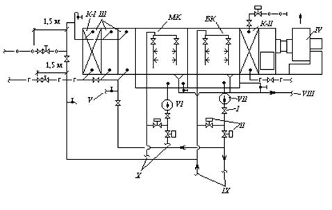
Рис. 3. Схема обвязки трубопроводами испарительного
кондиционера
I - обратный
клапан; II - взаимообратные клапаны; III - теплообменник
(воздухоохладитель); К-I - теплообменник первого подогрева (элемент
теплообменника III); МК - оросительная камера малого контура
циркуляции; БК - оросительная камера большого контура циркуляции; К-II
- теплообменник второго подогрева; IV - вентилятор испарительного
кондиционера; V - спуск воды в канализацию; VI, VII -
соответственно циркуляционные насосы малого и большого контура циркуляции; VIII
- канализационная линия; IX - трубопроводы к теплообменнику I
приточного кондиционера; Х - трубопроводы к теплообменнику II
приточного кондиционера; -г-г- - горячая магистраль; -о-о- - обратная
магистраль
2.12.
Компоновку испарительных кондиционеров следует выполнять в соответствии с рис. 4.
2.13. При
проектировании бескомпрессорных систем кондиционирования воздуха по схемам,
приведенным на рис. 1 и 2, испарительный и приточный кондиционеры
допускается располагать как в одном помещении, так и в разных помещениях.
2.14.
Приточные кондиционеры следует располагать, как правило, ниже испарительных
кондиционеров. При этом для предотвращения слива воды из трубопроводов их
следует присоединять к коллекторам оросительных камер с помощью петель
(гидравлических затворов) (рис. 1), а также предусматривать переливные и сливные
линии от поддонов оросительных камер (рис. 3). У циркуляционных насосов
следует устанавливать обратные клапаны.
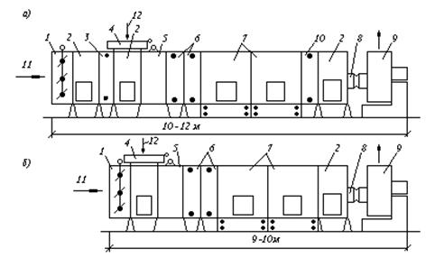
Рис. 4. Типовые компоновки испарительного кондиционера
а - для
схемы бескомпрессорной системы кондиционирования воздуха, приведенной на рис. 1; б
- для схемы бескомпрессорной системы кондиционирования воздуха, приведенной на
рис. 2;
1 - приемный клапан; 2 - камера обслуживания; 3 -
теплообменник первого подогрева; 4 - клапан воздушный; 5 -
фильтр; 6 - теплообменники (воздухоохладители); 7 - камеры
оросительные; 8 - секция присоединительная к вентилятору; 9 -
вентиляторный агрегат; 10 - теплообменник второго подогрева; 11 -
наружный воздух; 12 - рециркуляционный воздух
2.15.
Допускается располагать приточные кондиционеры выше испарительных кондиционеров.
При этом для предотвращения слива воды из теплообменников и трубопроводов в
поддоны оросительных камер необходимо предусматривать следующие мероприятия:
теплообменники I, II и III
следует присоединять к трубопроводам с помощью петель (рис. 1, 2 и 3); у
циркуляционных насосов следует устанавливать обратные клапаны; на
трубопроводах, подводящих воду к форсункам, как правило, следует устанавливать
соленоидные клапаны или другие автоматические быстро закрывающиеся устройства,
приводы которых следует блокировать с приводами циркуляционных насосов.
2.16. Схему двухступенчатой бескомпрессорной системы
кондиционирования воздуха, приведенную на рис. 2, следует применять при кондиционировании воздуха в
разнохарактерных помещениях.
При применении этой схемы производительность
испарительного кондиционера по воздуху следует принимать равной суммарной
производительности теплообменников II приточного кондиционера,
работающих в качестве доводчиков.
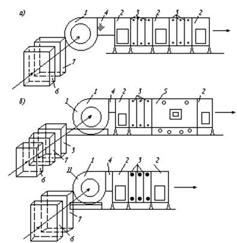
Рис. 5. Типовые компоновки приточных кондиционеров
а - для
схемы бескомпрессорной системы кондиционирования воздуха, приведенной на рис. 1; б
- для схемы бескомпрессорной системы кондиционирования воздуха, приведенной на
рис. 2;
I - при использовании приточного кондиционера в качестве круглогодичной
установки; II - при использовании приточного кондиционера в качестве
охлаждающей установки; 1 - вентагрегат; 2 - камера обслуживания; 3
- теплообменники (воздухоохладители); 4 - вставка; 5 - камера
орошения; 6 - фильтр; 7 - камера воздушная
2.17. При
проектировании двухступенчатой бескомпрессорной системы кондиционирования
воздуха по схеме, приведенной на рис. 2, необходимо предусматривать
следующие режимы работы приточного кондиционера: круглогодичное
кондиционирование воздуха, летнее охлаждение приточного воздуха.
Типовые компоновки приточных кондиционеров в
зависимости от их назначения приведены на рис. 5.
2.18. При
проектировании двухступенчатых бескомпрессорных систем кондиционирования
воздуха теплообменники I и II приточных кондиционеров следует
располагать на нагнетательной стороне вентиляторов.
2.19. В
районах с большими перепадами между дневными и ночными температурами приточные
кондиционеры допускается оснащать баками-аккумуляторами для использования
ночного холода. Баки-аккумуляторы следует присоединять по схеме, приведенной на
рис. 1.
2.20.
Приточный и испарительный кондиционеры двухступенчатых бескомпрессорных систем
кондиционирования воздуха, как правило, следует компоновать из типовых секций
центральных кондиционеров.
2.21.
Теплообменники I, II и III в приточных и испарительных кондиционерах следует
компоновать из типовых секций воздухонагревателей или воздухоохладителей.
Допускается компоновка теплообменников I и II из пластинчатых или
спирально-навивных калориферов, выпускаемых промышленностью.
Следует предусматривать параллельное присоединение
теплообменников по холодоносителю при общем противоточном движении
теплообменивающихся сред. Принципиальные схемы компоновки теплообменников I, II
и III, схемы их обвязки приведены на рис. 6.
2.22. При
проектировании двухступенчатых бескомпрессорных систем кондиционирования
воздуха необходимо предусматривать следующие схемы автоматического
регулирования температуры воздуха в обслуживаемых помещениях в теплый период
года:
а) двухпозиционное регулирование расходов воды в
контурах циркуляции оросительных камер БК и МК (рис. 7);
б) пропорциональное регулирование расхода воды в
контуре циркуляции оросительной камеры МК (рис. 8) и двухпозиционное
регулирование расхода воды в контуре циркуляции оросительной камеры БК.
2.23. В
случае применения схемы регулирования, приведенной на рис. 7, при
понижении температуры воздуха в помещении ниже расчетной вначале следует
предусматривать выключение насоса в контуре циркуляции оросительной камеры БК,
а затем насоса в контуре циркуляции камеры МК.
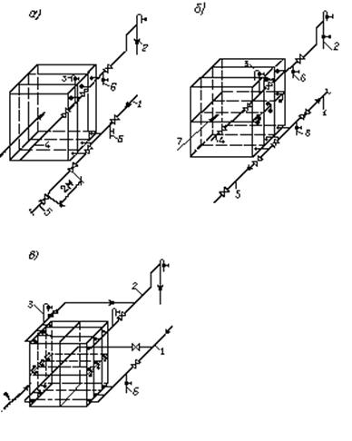
Рис. 6. Принципиальная схема обвязки теплообменников
(см. пп. 2.7
и 2.8)
а -
теплообменников I и III из калориферов типа КВБ; б -
теплообменников I и III из калориферов типа К4ВП или из типовых
секций кондиционеров К-30 и Кт-40; в - теплообменника II из
калориферов типа К4ВП, КВБ или из типовых секций кондиционеров типа Кт-60 и Кт-80;
1 - трубопровод холодной воды от камеры орошения; 2 - трубопровод
отепленной воды к камере орошения; 3 - кран для удаления воздуха; 4
- трубопровод горячей воды из теплосети; 5 - трубопровод обратной воды в
теплосеть; 6 - кран для спуска воды; 7 - охлаждаемый поток
воздуха
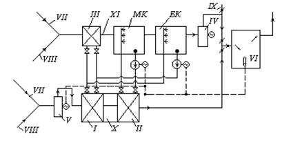
Рис. 7. Принципиальная схема двухпозиционного
регулирования бескомпрессорной системы кондиционирования воздуха
I, II,
III - теплообменники (воздухоохладители); IV, V -
соответственно вентиляторы испарительного и приточного кондиционеров; VI
- датчик температуры воздуха в помещении; МК, БК - соответственно
оросительные камеры малого и большого контуров циркуляции; VII -
наружный воздух; VIII - рециркуляционный воздух; IX - выброс в
атмосферу воздуха в теплый период года; Х - приточный кондиционер; XI
- испарительный кондиционер
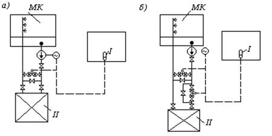
Рис. 8. Принципиальные схемы автоматизации малого
контура циркуляции бескомпрессорной системы кондиционирования воздуха
а - схема с
клапаном на перемычке; б - схема с двумя взаимообратными клапанами; МК
- оросительная камера малого контура циркуляции воды; I - датчик
температур воздуха в помещении; II - теплообменник (воздухоохладитель)
При повышении температуры воздуха в помещении
включение указанных насосов следует предусматривать в обратном порядке.
2.24.
Пропорциональное регулирование расхода холодной воды в теплообменнике II
следует предусматривать при постоянном ее расходе в оросительной камере МК
по одной из следующих схем:
с клапаном расхода воды на перемычке;
с трехходовым клапаном;
с двумя взаимообратными клапанами.
2.25.
Допускается применение пропорционального регулирования расхода воды в контуре
циркуляции оросительной камеры БК. Кроме того, допускается при понижении
температуры в помещении ниже расчетной предусматривать отключение
теплообменника III. При дальнейшем понижении температуры в помещении
следует предусматривать отключение насоса в контуре циркуляции оросительной
камеры БК.
2.26. При
проектировании двухступенчатых бескомпрессорных систем кондиционирования
воздуха по схеме на рис. 2, в контуре циркуляции воды оросительной камеры МК
должны быть установлены регуляторы давления «до себя».
2.27. При
выполнении требований п. 2.6 настоящей Инструкции схема автоматического
регулирования параметров воздуха в обслуживаемых помещениях в холодный и
переходный периоды года (при работе испарительного кондиционера по схеме на
рис. 1)
аналогична типовым схемам обычных центральных кондиционеров, разработанным ГПИ
Сантехпроект.
1. Двухступенчатая бескомпрессорная система
кондиционирования воздуха (БСКВ) состоит из двух самостоятельных кондиционеров
- приточного и испарительного (рис. 1), связанных между собой
контурами циркуляции воды.
2. Приточный кондиционер БСКВ (рис. 1)
состоит из следующих основных элементов:
поверхностного теплообменника I;
поверхностного теплообменника II;
вентилятора V.
Испарительный кондиционер (рис. 1)
состоит из следующих основных элементов:
поверхностного теплообменника III;
оросительной камеры МК;
оросительной камеры БК;
вентилятора IV.
3. В БСКВ имеются два самостоятельных контура
циркуляции воды, рис. 1:
контур циркуляции оросительной камеры МК (малый
контур), включающий теплообменник II, оросительную камеру МК и
циркуляционный насос VI;
контур циркуляции оросительной камеры БК
(большой контур), включающий параллельно соединенные по холодоносителю
теплообменники I и III, оросительную камеру БК и
циркуляционный насос VII.
4. В теплый период года тепло приточного воздуха
отводится к воде, циркулирующей в теплообменниках I и II.
Охлаждение воды, нагретой в теплообменниках I и
III, осуществляется в оросительной камере БК большого контура
циркуляции воды. Охлаждение воды, нагретой в теплообменнике II,
осуществляется в оросительной камере МК малого контура циркуляции воды.
5. В двухступенчатой бескомпрессорной системе
кондиционирования воздуха осуществляется перенос энергии в виде тепла от
источника с более низким теплосодержанием (от наружного воздуха в приточном
кондиционере) к источнику с более высоким теплосодержанием (к вспомогательному
потоку воздуха в испарительном кондиционере).
В результате затраты внешней энергии потенциал тепла,
отведенного от приточного воздуха повышается.
6. Для обеспечения большей степени охлаждения
приточного воздуха в БСКВ предусматривается:
а) предварительное охлаждение вспомогательного потока
воздуха в испарительном кондиционере, что позволяет снизить температуру его предела
охлаждения и получить более холодную воду;
б)
два самостоятельных контура циркуляции воды, позволяющие увеличить количество
воды, циркулирующей в каждом контуре, что обусловливает ее небольшой подогрев в
теплообменниках и простые условия оборотного охлаждения в оросительных камерах;
разделить температурные условия работы каждого контура циркуляции воды. В малом
контуре циркулирует вода более низкой температуры, чем в большом контуре;
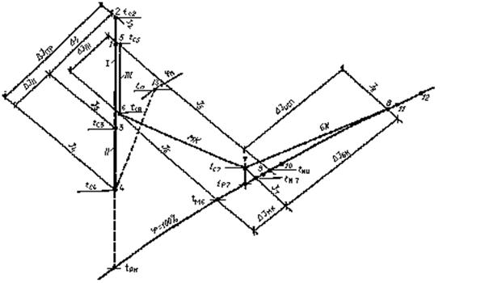
Рис. 9. Схема
процессов обработки воздуха в БСКВ на J - d-диаграмме
в) использование в оросительной камере БК,
предназначенной для охлаждения воды, циркулирующей в теплообменниках I и
III, вспомогательного потока воздуха (в состоянии близком к насыщению)
после оросительной камеры МК.
7. Процесс обработки воздуха в БСКВ в теплый период
года представлен в I - d-диаграмме на рис. 9, где
точки (арабские цифры), характеризующие состояние воздуха до и после
теплообменных аппаратов, совпадают с обозначениями на рис. 1.
Линии на рис. 9 для приточного кондиционера
обозначают следующие процессы:
1-2 -
нагревание воздуха в вентиляторе V;
2-3 -
охлаждение воздуха в теплообменнике I;
3-4 -
охлаждение воздуха в теплообменнике II;
9-10
- нагревание воды в теплообменнике II;
4-13
- изменение состояния приточного воздуха в помещении.
Линии на рис. 9 для испарительного
кондиционера обозначают следующие процессы:
5-6 -
охлаждение воздуха в теплообменнике III;
6-7 -
повышение теплосодержания в камере МК;
7-8 -
повышение теплосодержания в камере БК;
11-12
- нагревание воды в теплообменниках I и III;
12-11
- охлаждение воды в оросительной камере БК.
8. В зимний и переходный периоды года испарительный
кондиционер (рис. 1) согласно требованиям п. 2.6 настоящей
Инструкции обеспечивает нагревание приточного воздуха в теплообменниках первого
и второго подогрева и адиабатическое увлажнение воздуха в оросительной камере МК.
9. При работе БСКВ соблюдаются следующие уравнения
теплового баланса:
а) количество тепла, отнятого от наружного воздуха в
приточном кондиционере, равняется количеству тепла, переданного воздуху в
испарительном кондиционере. При равных количествах воздуха в приточном и
испарительном кондиционерах общее понижение теплосодержания воздуха DI в приточном кондиционере
равняется общему повышению теплосодержания воздуха в испарительном кондиционере
(рис. 9)
DIпр = I2 - I4 = DIисп = I8 - I5; (1)
б) количество тепла, отнятого от воздуха в
теплообменнике II, равняется количеству тепла, переданного воздуху в
камере МК
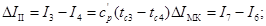
(2)
в) количество тепла, отнятого от воздуха в I и III
теплообменниках, равняется количеству тепла, переданного воздуху в оросительной
камере БК,
DII - DIIII = (I2
- I3) + (I5 - I6) = DIБК = I8 - I7 (3)
1. С целью предварительного
определения воздухообменов при проектировании БСКВ температуру подаваемого в
помещение воздуха в летний период года после приточного кондиционера следует
принимать:
а) при работе приточного и испарительного
кондиционеров на наружном воздухе - равную температуре мокрого термометра
наружного воздуха;
б) при работе приточного кондиционера на наружном, а
испарительного кондиционера на вытяжном воздухе (или на смеси наружного с
вытяжным воздухом) - равную температуре мокрого термометра вытяжного воздуха
(или смеси наружного с вытяжным воздухом).
Окончательная температура приточного воздуха определяется
расчетом.
2. Процессы тепло и влагообмена, происходящие в
поверхностных теплообменниках и оросительных камерах двухступенчатой
бескомпрессорной системы кондиционирования воздуха, а также конечная
температура охлаждения приточного воздуха определяются:
а) начальными параметрами воздуха, поступающего в
приточный и испарительный кондиционеры. В общем случае эти параметры могут быть
неодинаковыми.
б) соотношением количества воздуха, поступающего в
приточный (основной поток) и испарительный (вспомогательный поток)
кондиционеры;
в) конструктивными и гидродинамическими
характеристиками системы. К ним относятся:
поверхности охлаждения теплообменников I, II
и III, которые характеризуются критерием глубины 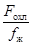
;
критерии живых сечений теплообменников 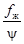
, определяющие
при данной скорости воды в трубках теплообменников отношения водяных
эквивалентов теплообменивающихся сред;
конструктивные характеристики теплообменников
(характер оребрения труб) и оросительных камер (тип центробежных форсунок,
число рядов и т.д.);
коэффициенты орошения В в оросительных камерах
малого и большого контуров циркуляции воды, соотношения количеств воды,
циркулирующей в I, II и III теплообменниках.
3. Производительность по воздуху приточного и
испарительного кондиционеров БСКВ, проектируемых по схемам рис. 1 и 2,
следует определять в соответствии с требованиями пп. 2.2 и 2.16 настоящей Инструкции.
4. Расчет БСКВ заключается в расчете и увязке
совместной работы приточного и испарительного кондиционеров (см. рис. 1),
связанных друг с другом большим и малым контурами циркуляции воды.
5. Специфика расчета каждого
контура циркуляции воды БСКВ заключается в увязке совместной работы
поверхностного теплообменника и оросительной камеры.
Подобрав теплообменник, охлаждающий приточный воздух
до требуемой температуры, необходимо рассчитать оросительную камеру (определить
коэффициент орошения и количество охлаждающего воздуха), способную обеспечить
охлаждение воды, циркулирующей в теплообменнике, от конечной температуры
отепленной воды до той температуры, с которой вода должна входить в теплообменник.
6. Специфика расчета БСКВ состоит
в том, что расчет малого контура циркуляции зависит от условий работы большого
контура циркуляции (т.е. от параметров воздуха после теплообменников I и
III). В свою очередь, расчет большого контура циркуляции зависит от
параметров воздуха после камеры орошения малого контура циркуляции (см. рис. 1).
7. Расчет БСКВ следует проводить с помощью
графоаналитического метода, аналитического метода расчета, программ для ЭВМ
«Росинка-22» и «Росинка-24», позволяющих решать прямые и обратные задачи.
8. Графоаналитический метод дает возможность точно
рассчитать в соответствии с требованиями раздела 2 настоящей Инструкции конечные
параметры охлажденного воздуха после приточного кондиционера и конечные
параметры воздуха, выходящего из испарительного кондиционера.
Промежуточные параметры воздуха после I и III
теплообменников, а также параметры воздуха после оросительной камеры МК
и температуры воды в малом и большом контурах циркуляции воды вычисляются с
некоторым приближением.
9. Интегральные процессы тепло- и
влагообмена, происходящие в БСКВ при различных начальных параметрах воздуха в
приточном и испарительном кондиционерах, описываются следующим критериальным
уравнением:
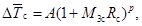
где
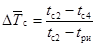
-
относительное изменение температуры воздуха;
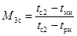
- температурный критерий, учитывающий начальные
параметры воздуха в системе;
tc2 и tc4
- температура воздуха по сухому термометру до и после приточного кондиционера
(рис. 9);
tри и tми
- температура точки росы и температура по мокрому термометру воздуха,
поступающего в испарительный кондиционер (рис. 9);
Rс = 1+2,34а - критерий, учитывающий влияние влагообмена
на теплообмен;
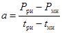
- коэффициент пропорциональности, мм рт. ст./град.;
Рри и Рми
- парциальные давления водяного пара в состоянии насыщения соответственно при
температурах tри и tми, мм рт. ст.
10. Уравнения, по которым следует
выполнять интегральные расчеты БСКВ, проектируемых по схемам на рис. 1 и 2 из типовых
секций КТ при равных номинальных производительностях по воздуху приточных и
испарительных кондиционеров, приведены в табл. 1.
Пределы применимости расчетных уравнений даны в табл. 2. С
помощью каждого уравнения в табл. 1 могут быть рассчитаны БСКВ различной
производительности по воздуху в пределах типового ряда кондиционеров, а именно
30, 40, 60, 80, 120, 160 и 240 тыс. м3/ч, и при различных или одинаковых
начальных параметрах воздуха, поступающего как в приточный, так и в
испарительный кондиционеры (см. табл. 2 и п. 1.3 настоящей Инструкции).
Примечание. При расчете БСКВ
по схеме на рис. 2 следует выполнять требования п. 2.16
настоящей Инструкции. Поверхности теплообменника I и каждого
теплообменника II приточного кондиционера должны отвечать результатам
расчета по уравнениям табл. 1 или графику на рис. 10.
11. Каждое уравнение в табл. 1 соответствует БСКВ с
фиксированными поверхностями I, II и III теплообменников,
а также определенным коэффициентам орошения В в форсуночных камерах с
заданными конструктивными характеристиками.
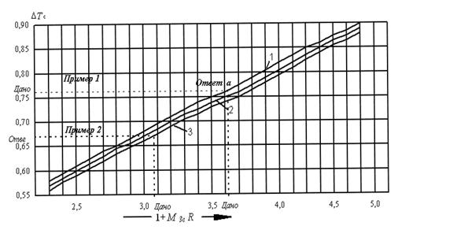
Рис. 10. График для определения величины охлаждения
воздуха 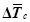
в
бескомпрессорных системах кондиционирования воздуха
Линии 1, 2 и 3 соответствуют характеристикам
систем в табл. 1
Таблица 1
|
№ п/п линий на графике, рис. 10
|
Расчетные уравнения
|
Характеристика элементов БСКВ
|
Оросительные камеры
|
|
Теплообменники
|
|
Критерий глубины 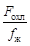
|
Критерий живых сечений
|
Условный коэффициент орошения Вусл
|
Малый контур циркуляции
|
Большой контур циркуляции
|
|
I
|
II
|
III
|
I
|
II
|
III
|
I
|
II
|
III
|
Коэффициент орошения ВМК = 1,5
|
Коэффициент орошения ВБК = 1,8
|
|
1
|
|
440 -
460
z = 12
|
440 -
460
z = 12
|
220 -
230
z = 6
|
80 - 110
|
80 - 110
|
170 - 220
|
1,2
|
1,5
|
0,6
|
Диаметр форсунок d = 3,5 мм
|
Диаметр форсунок d = 3,5; 4; 4,5 мм
|
|
2
|
|
330 -
340
z = 9
|
330 -
340
z = 9
|
330 -
340
z = 9
|
110 - 150
|
110 - 150
|
110 - 150
|
1,2
|
1,5
|
0,6
|
|
3
|
|
330 -
340
z = 9
|
330 -
340
z = 9
|
220 -
150
z = 6
|
110 - 150
|
110 - 150
|
170 - 220
|
1,2
|
1,5
|
0,6
|
Примечания к таблице 1: 1. z - суммарное число рядов оребренных труб по пути движения воздуха
в типовых секциях подогрева или охлаждения, из которых собираются
теплообменники I, II , III.
2. Весовая скорость воздуха в теплообменниках I,
II и III при их номинальной производительности не должна
превышать vg = 7,3 кг/м2×с. При
этом суммарное сопротивление I и II теплообменников приточного
кондиционера соответственно уравнениям составит: 1. Н = 85 мм вод. ст.
2. Н = 64 мм вод. ст. 3. Н = 64 мм вод. ст.
3. При компоновке теплообменников приточного
кондиционера из пластинчатых или спирально-навивных калориферов, выпускаемых
промышленностью, необходимо обеспечивать указанные в табл. 1
значения критериев и .
Полученные значения 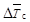
для теплообменников из
пластинчатых калориферов должны быть уменьшены на 5 - 10 %.
4. Камеры орошения малого и большого контуров
циркуляции воды следует принимать двухрядными с взаимовстречным распылением
воды центробежными форсунками.
Плотность расположения форсунок следует принимать 24
шт. м2/ряд, весовую скорость воздуха в камере vg = 2,8 - 3,3 кг/м2с.
5. Скорость воды в циркуляционных трубопроводах БСКВ
следует принимать в пределах 0,7 - 1,3 м/с.
Мощность циркуляционных насосов должна
подбираться из условия обеспечения давления воды перед форсунками оросительных
камер в пределах 2 - 3,5 ати, а также компенсации потерь давления в
циркуляционных трубопроводах и теплообменниках.
Таблица 2
|
Параметры воздуха в летний период на входе
|
Произведение критериев М3с ´ Rc
|
|
в приточный кондиционер (см. п. 13)
|
в испарительный кондиционер
|
|
Температура точки росы tp, °С
|
Температура мокрого термометра tм,
°С
|
Относительная влажность, j %
|
Температура точки росы tpи, °С
|
Температура мокрого термометра tми,
°С
|
Относительная влажность, j %
|
|
От 1 до 18
|
От 15 до 25
|
£ 65
|
От 1 до 18
|
От 15 до 25
|
£ 65
|
От 1,3 до 3,7
|
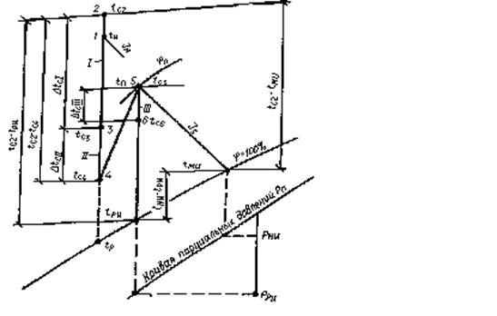
Рис. 11. Графическая интерпретация расчетных
зависимостей при работе испарительного кондиционера на рециркуляционном воздухе
tн - температура наружного воздуха (параметры Б); tc2
- температура воздуха, поступающего в приточный кондиционер; tп
- температура рециркуляционного воздуха, поступающего в испарительный
кондиционер; tми и tри - температура
мокрого термометра и точка росы воздуха, поступающего в испарительный
кондиционер; DtcI; DtcII; DtcIII - разности температур соответственно в I, II
и III теплообменниках
12. С помощью уравнений, приведенных в табл. 1,
следует решать как прямые, так и обратные задачи. Целью прямых задач является
определение поверхности охлаждения теплообменников при известных начальных
параметрах воздуха, поступающего в приточный и испарительный кондиционеры, и
при заданной глубине охлаждения приточного воздуха.
Целью обратной задачи является определение глубины
охлаждения воздуха в БСКВ при известных начальных параметрах воздуха,
поступающего в приточный и испарительный кондиционеры, и известных поверхностях
охлаждения теплообменников.
13. Для облегчения расчетов по
уравнениям в табл. 1 приводится
расчетный график на рис. 10.
Графическая интерпретация расчетных величин по
уравнению п. 9
прил. 2 для основных вариантов работы испарительного кондиционера системы БСКВ
приведена на рис. 11, 12, 13.
14. При решении прямых задач
конечная температура охлажденного в приточном кондиционере воздуха tс4
не может быть задана произвольно.
При ее назначении следует руководствоваться
требованиями п. 1
прил. 2
к настоящей Инструкции.
Температура tс4 связана с
температурой воздуха tc8 после испарительного кондиционера
(см. рис. 9).
Температура tc8, определяемая по
теплосодержанию I8 и j = 100 %, не должна
быть выше температуры воздуха, поступающего в теплый период года в
испарительный кондиционер (см. п. 15б прил. 2 к настоящей Инструкции).
15. Графоаналитический метод
построения на I - d-диаграмме (см. рис. 9) процессов в БСКВ при известных параметрах воздуха,
поступающего в приточный и испарительный кондиционеры (tc2 и tc5),
а также при известной температуре охлажденного приточного воздуха tc4
состоит в следующем:
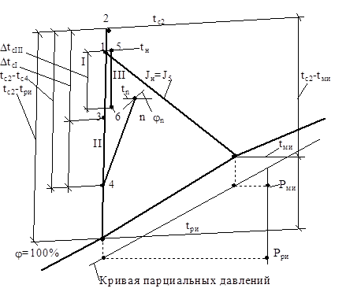
Рис. 12. Графическая интерпретация
расчетных зависимостей при работе испарительного кондиционера на наружном воздухе
tн - температура наружного воздуха (параметры Б),
поступающего в испарительный кондиционер; tми и tри
- температуры мокрого термометра и точки росы воздуха, поступающего в
испарительный кондиционер; tс2 - температура воздуха
поступающего в приточный кондиционер; ; ; - разности температур соответственно в I,
II и III теплообменниках
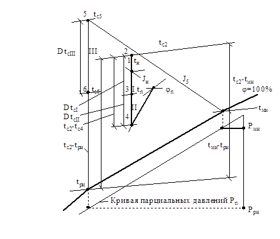
Рис. 13. Графическая интерпретация расчетных
зависимостей при работе испарительного кондиционера на вытяжном воздухе из
технологических помещений
tн - температура наружного воздуха (параметры Б); tc2
- температура воздуха, поступающего в приточный кондиционер; t5
- температура вытяжного воздуха, поступающего в испарительный кондиционер; tми
и tри - температуры мокрого термометра и точки росы воздуха,
поступающего в испарительный кондиционер; ; ; - разности температур воздуха
соответственно в I, II и III теплообменниках
а) вычисляют величину DIпр
(разность теплосодержаний воздуха в приточном кондиционере)
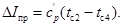
Согласно требованиям пп. 2.2, 2.16 настоящей Инструкции и п. 9 прил. 1 к
ней
DIпр = DIисп;
б) определяют теплосодержание воздуха после
испарительного кондиционера (точка 8 на рис. 9). Из точки 5 (параметры
воздуха, поступающего в испарительный кондиционер) проводят линию постоянного
теплосодержания I5 до пересечения с j = 100 % в точке tми. Вычисляют
I8 = I5
+ DIисп
и
на линии j = 100 % при I8 находят точку 8
и tс8;
в) определяют температуру воды (точка 11),
поступающей в теплообменники I и III
t11 = (tc8 + 0,2);
г) определяют температуру воздуха tc3
после теплообменника приточного кондиционера
tc3 = t11 + (0,5 ¸ 2,5).
На I - d-диаграмме проводят линию
постоянного влагосодержания через точку 1 и на эту линию наносят точку 3
при вычисленной tc3 (рис. 9);
д) определяют разность теплосодержаний воздуха в
теплообменнике II приточного кондиционера
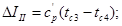
е) определяют начальную и конечную температуры воды,
циркулирующей в малом контуре циркуляции воды, точки 9, 10 на j = 100 % (рис. 9).
Температура воды, поступающей в теплообменник II
(эта же температура соответствует температуре воды после охлаждения в
оросительной камере МК) равна:
t9 = (tc4 - 0,3).
Температуру воды после теплообменника II
вычисляют
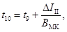
где
ВМК - коэффициент орошения в оросительной камере МК, ВМК
= 1,5;
ж) определяют параметры воздуха после оросительной
камеры малого контура циркуляции МК (точка 7 на рис. 9);
вычисляют точку росы воздуха
tр7 = (t9 - 0,2),
при j = 95 % и tp7
на I - d-диаграмму наносят точку 7 и определяют
теплосодержание I7 и температуру tc7;
з) определяют параметры воздуха после теплообменника III
испарительного кондиционера (точка 6 на I - d-диаграмме,
рис. 9).
Вычисляют теплосодержание
I6 = (I7 - DIII)
при
DIII = DIМК.
Из точки 5, характеризующей параметры воздуха,
поступающего в испарительный кондиционер, на I - d-диаграмме
проводят линию d = const.
На этой линии откладывают величину I6
и наносят точку 6;
и) определяют разность теплосодержаний воздуха в
оросительной камере БК DIБК = I8 - I7 и
температуру воды, поступающей в камеру орошения БК,
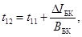
где
ВБК - коэффициент орошения в камере БК;
к) полученные указанным выше способом точки 2, 3,
4 и 5, 6, 7, 8, характеризующие параметры
воздуха до и после теплообменных аппаратов БСКВ, соединяют прямыми линиями (см.
рис. 9).
16. Последовательность расчета
БСКВ при решении прямых задач, заключающихся в определении поверхности
теплообменников I, II и III, такова:
а) на I - d-диаграмму наносят известные
параметры: наружного воздуха, поступающего в приточный кондиционер, Iн,
tн - точка 1 (см. рис. 9, 11, 12 и 13); воздуха, поступающего в
испарительный кондиционер (рециркуляционного из помещений, рис. 11;
наружного, рис. 12;
вытяжного из технологических помещений, рис. 13, точка 5);
б) по I - d-диаграмме определяют:
начальную
температуру воздуха, поступающего в приточный кондиционер,
tc2 = (tн + 1,5),
температуру
мокрого термометра tми и температуру точки росы tри
воздуха, поступающего в испарительный кондиционер;
в) вычисляют критерий
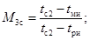
г) вычисляют критерий Rс по
диаграмме на рис. 14,
предварительно определив разность tри - tми,
принимая tр = tри и tвн =
tми;
д) вычисляют величину комплекса (1 + М3сRс);
е) вычисляют величину относительного изменения
температуры воздуха
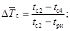
ж) при известных 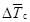
и (1 + М3сRс)
с помощью графика на рис. 10 (ход решения прямых задач показан пунктирными
линиями) и табл. 1 подбирают элементы системы, обеспечивающей
требуемое охлаждение приточного воздуха;
з) при решении прямой задачи точка пересечения прямых и (1 = М3сRс)
на графике рис. 10 может оказаться выше линий, характеризующих охлаждающую
способность каждой системы. Это означает, что при данных параметрах воздуха,
поступающего в приточный и испарительный кондиционеры, требуемое охлаждение
воздуха не может быть обеспечено с помощью БСКВ при принятых (табл. 1)
поверхностях охлаждения. Если же точка пересечения прямых и (1 + М3сRс)
находится между линиями графика, то для расчета следует принимать вышележащую
линию.
17. Для решения обратных задач
при расчете БСКВ должны быть предварительно известны:
параметры воздуха, поступающего в приточный
кондиционер (наружного, рециркуляционного или их смеси);
параметры воздуха, поступающего в испарительный
кондиционер (наружного, вытяжного или их смеси);
производительность системы по воздуху;
конструктивные характеристики теплообменников:
критерий глубины и отношение живых сечений 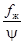
;
условные коэффициенты орошения теплообменников.
Расчет БСКВ при решении обратных задач заключается:
в определении параметров воздуха после приточного
кондиционера;
в определении параметров воздуха и воды после
элементов системы и каждого контура циркуляции;
в построении процессов на I - d-диаграмме.
18. Последовательность расчета
БСКВ при решении обратных задач такова:
а) на I - d-диаграмму наносятся
известные параметры Iн, tн наружного
воздуха - точка 1 (рис. 11, 12 и 13);
воздуха, поступающего в испарительный кондиционер
(рециркуляционного из помещения, рис. 11; наружного, рис. 12; вытяжного
из технологических помещений, рис. 13) - точка 5;
б) по I - d-диаграмме определяют начальную
температуру воздуха, поступающего в приточный кондиционер tc2
= tн + 1,5 °С;
температуру мокрого термометра tми и
температуру точки росы tри воздуха, поступающего в
испарительный кондиционер;
в) вычисляют критерий М3с при
известных величинах tc2, tми, tри,
см. п. 9
приложения 2
к настоящей Инструкции.
г) вычисляют критерий Rс по
диаграмме рис. 14,
предварительно определив разность tри - tми,
принимая tp = tри, tвн = tми;
д) вычисляют величину комплекса (1 + М3сRс);
е) определяют величину критерия
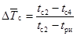
по
уравнениям табл. 1 или по графику на рис. 10 при известных (1 + М3сRс)
и выбранном типе БСКВ;
ж) вычисляют температуру воздуха, подаваемого в
помещения, после приточного кондиционера
tс4 = tc2 - (tc2 -
tри);
з) графически решение обратной задачи показано на рис.
10
пунктирными линиями.
19. Для определения производительности системы по
воздуху и воде вычисляют:
а) разность теплосодержаний приточного и внутреннего воздуха
DI = (I13 - I4);
б) расход воздуха Gпр (кг/ч),
необходимого для снятия теплоизбытков Qпом (ккал/ч) в
помещении:
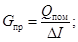
в) расход воздуха в испарительном кондиционере,
принимая его равным расходу воздуха в приточном кондиционере,
Gисп = Gпр;
г) расход воды в малом контуре циркуляции
WМК = Gисп × ВМК = Gисп × 1,5;
д) расход воды в большом контуре циркуляции
WБК = Gисп ×ВБК = Gисп × 1,8,
где
ВБК - коэффициент орошения в камере БК
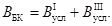
20. С помощью аналитического
метода рассчитываются системы БСКВ при различных производительностях по воздуху
(в том числе при отличных от номинальных по ряду Кт и при неравных
производительностях приточных и испарительных кондиционеров).
Этот метод применим к системам, компонуемым из типовых
секций Кт, а также к системам из оборудования, серийно выпускаемого
промышленностью.
21. При применении аналитического метода расчета БСКВ
предварительно должны быть известны:
параметры наружного воздуха;
параметры воздуха, поступающего в приточный и
испарительный кондиционеры;
количество воздуха, поступающего в приточный и
испарительные кондиционеры;
температура охлажденного воздуха в приточном
кондиционере (для решения прямых задач см. пп. 14 и 15 прил. 2 к настоящей Инструкции);
конструктивные и гидродинамические характеристики
системы (для решения обратных задач см. пп. 17 и 18 прил. 2 к настоящей Инструкции).
Для теплообменников I, II и III
должны быть известны: тип секций воздухонагревателей кондиционера, тип секций
поверхностных воздухоохладителей или марка калориферов; воздухоохлаждающая
поверхность Fохл (м2) каждого теплообменника;
живое сечение для прохода воды y (м2) каждого
теплообменника; живое сечение для прохода воздуха fж (м2)
каждого теплообменника; условные коэффициенты орошения теплообменников
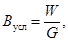
где
W - расход воды, проходящей через теплообменник, кг/ч;
G - расход
воздуха, кг/ч.
Для оросительных камер малого и большого контуров
циркуляции должны быть известны: типы оросительных камер, число и диаметры
форсунок.
Примечание. Коэффициент Вусл должен находиться в пределах от 0,6
до 1,8. Оптимальные условные коэффициенты орошения для теплообменников I,
II, III соответственно 1,2; 1,5; 0,6.
22. Сущность аналитического метода расчета малого и
большого контуров циркуляции БСКВ с учетом требований в пп. 5 и 6 прил. 2 к
настоящей Инструкции заключается в следующем:
а) предварительно рассчитывают теплообменники I
и III большого контура циркуляции с целью нахождения параметров
охлажденного в них воздуха, который поступает в теплообменные аппараты малого
контура циркуляций (теплообменник II и оросительную камеру МК);
б) рассчитывают теплообменные аппараты малого контура
циркуляции и определяют температуру охлажденного воздуха tс4
и параметры воздуха после оросительной камеры МК, которые являются
начальными для оросительной камеры большого контура циркуляции;
в) рассчитывают оросительную камеру большого контура
циркуляции с целью определения температуры холодной воды, необходимой для
работы теплообменников I и III;
г) предварительно определяют температуру холодной
воды, поступающей в теплообменники I и III, а также параметры
воздуха, охлажденного в этих теплообменниках, в соответствии с указаниями п. 15 а - г и
з прил. 2
к настоящей Инструкции.
При неравенстве количеств воздуха, проходящего в
приточном и испарительном кондиционерах, величина DIисп находится по выражению:
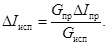
(1)
Последовательность расчета
23. Наносят на I - d-диаграмму параметры
воздуха, поступающего в приточный и испарительный кондиционеры в соответствии с
п. 16а
и б прил. 2
к настоящей Инструкции.
24. Предварительно задаются температурой охлажденного
воздуха tс4 (рис. 9) в соответствии с указаниями
пп. 1
и 14
прил. 2
к настоящей Инструкции и определяют начальную температуру воды, поступающей в
теплообменники I и III (точка 11 на рис. 9) в
соответствии с п. 15 а - в того же приложения.
25. Рассчитывают теплообменник I. Расчет сводится
к нахождению температуры охлажденного воздуха tc3 (рис. 9). При расчете теплообменника определяют:
а) критерий глубины ;
б) отношение живых сечений ;
в) весовую скорость воздуха в живом сечении
теплообменника
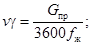
(2)
г) расход воды в теплообменнике
W = GпрВусл; (3)
д) скорость воды в трубках теплообменника
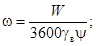
(4)
е) величину начальной движущей силы теплообмена (tc
- tвн), приняв tвн равной начальной
температуре воды t11, поступающей в теплообменник, а tc
= tc2;
ж) величину охлаждения воздуха в теплообменнике Dtc по уравнению
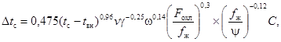
(5)
где С - коэффициент, для
перекрестного движения контактирующих сред С = 0,96 - 0,97, для
противоточного движения сред С = 1.
Примечание. Уравнение (5) справедливо для расчета спирально-навивных
теплообменников (секций подогрева или охлаждения) центральных кондиционеров Кт
или Кд. При расчете теплообменников приточного кондиционера из пластинчатых
калориферов полученные по уравнению (5) значения Dtc должны быть уменьшены на 5 - 10 %.
з) температуру охлажденного в теплообменнике воздуха
(точка 3 на рис. 9)
tc3 = tc2
- Dtc;
и) конечную температуру отепленной воды tвк,
используя уравнение теплового баланса для теплообменника (точка 12 на
рис. 9)
(6)
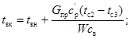
(7)
к) сопротивление теплообменника по воздуху в
зависимости от типа теплообменника:
для теплообменников со спирально-навивными крупными
гофрами (секции кондиционеров)
H = 0,0866 z (vg)1,87, (8)
для калориферов КВБ
H =
0,28 z1 (vg)1,65, (9)
для калориферов К4ВП
H = 0,175 z1 (vg)1,72, (10)
где
z - число рядов труб теплообменника по ходу воздуха;
z1 - число калориферов по ходу воздуха.
26. Рассчитывают теплообменник III.
Расчет сводится к нахождению по уравнению (5) температуры охлажденного воздуха tс6
(рис. 9).
Последовательность расчета теплообменника III
аналогична приведенной в п. 25 прил. 2 к настоящей Инструкции. Начальная
температура воды, поступающей в теплообменник III, принимается равной t11
(точка 11 на рис. 9), а в уравнении (5) температура tc
= tс5.
27. Рассчитывают теплообменник II.
Расчет сводится к определению начальной температуры воды (точка 9 на
рис. 9), необходимой для охлаждения
приточного воздуха до tс4 (точка 4 на рис. 9).
При расчете:
а) начальную температуру воздуха tс3
принимают равной температуре охлажденного воздуха в теплообменнике I;
б) вычисляют критерий глубины и отношение живых
сечений ;
скорости воздуха vg и скорости воды w определяют по формулам (2) и (4) п. 25;
в) определяют величину охлаждения воздуха DtcII и перепад теплосодержаний DIII (рис. 9)
DtcII = (tc3 - tc4),
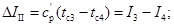
(11)
г) определяют начальную движущую силу теплообмена (tc
- tвн) из уравнения (5);
д) определяют начальную температуру воды t9,
поступающей в теплообменник II (точка 9 на рис. 9),
t9 = tc3
- (tc - tвн);
е) определяют конечную температуру t10
отепленной воды после теплообменника II (точка 10 на рис. 9) по
уравнению (7)
и по п. 25к
вычисляют сопротивление теплообменника проходу воздуха.
28. Рассчитывают оросительную
камеру МК. Расчет заключается в определении коэффициента орошения ВМК,
необходимого для требуемого охлаждения воды, циркулирующей в теплообменнике II.
При расчете оросительной камеры МК должны быть
известны:
начальная температура воды tвн,
которая равна температуре отепленной воды из теплообменника II (точка 10
на рис. 9);
конечная температура tвк охлажденной
воды, которая равна начальной температуре воды, поступающей в теплообменник II
(точка 9 на рис. 9);
начальные параметры воздуха (температура tс
и точка росы tp) перед оросительной камерой МК. Эти
параметры соответствуют конечным параметрам воздуха после теплообменника III
(точка 6 на рис. 9).
Расчет оросительной камеры на режимах охлаждения воды
проводится по уравнению
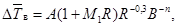
(12)
где
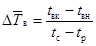
-
критерий относительного охлаждения воды;
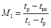
- температурный критерий;
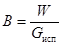
-
коэффициент орошения;
А - опытный
коэффициент.
На I - d-диаграмме строят процесс сухого
охлаждения воздуха в теплообменнике III (точки 5 и 6 на
рис. 9)
и определяют:
а) температуру точки росы tри и
содержание воздуха Iв перед оросительной камерой МК;
б) критерий относительного охлаждения воды
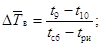
(13)
в) температурный критерий
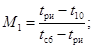
(14)
г) критерий R по диаграмме на рис. 14,
предварительно определив разность tp - tвн
(рис. 9),
принимая tp = tри и tвн =
t10;
д) коэффициент орошения ВМК по
номограмме на рис. 15 или по формулам в зависимости от диаметра
форсунок
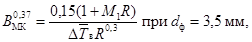
(15)
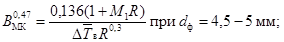
(16)
е) теплосодержание воздуха после оросительной камеры
I7
= I6 + ВМК
(tвн - tвк)
св; (17)
ж) на I - d-диаграмму наносят точку 7
при I7 и j = 95 - 97 %. Строят процесс
повышения теплосодержания воздуха в камере МК (линию 6-7
на рис. 9).
Примечание. Если коэффициент
орошения ВМК в камере МК отличается от условного
коэффициента орошения 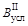
во II теплообменнике меньше чем на
10 %, то расчет считается законченным.
Увязка коэффициентов орошения ВМК и ведется
изменением величины DtcII охлаждения воздуха во II теплообменнике.
Если коэффициент орошения в камере ВМК
меньше более
чем на 10 %, то принятого количества вспомогательного воздуха недостаточно для
охлаждения воды. Пересчет теплообменника II ведется с уменьшенной
величиной DtcII т.е. при увеличенной температуре воздуха после
теплообменника. Если ВМК больше более чем на 10 %, то следует
провести повторный расчет теплообменника, увеличивая DtcII и принимая более глубокое охлаждение воздуха.
29. Рассчитывают оросительную
камеру БК. Расчет сводится к определению коэффициента орошения ВБК,
необходимого для требуемого охлаждения воды, отепленной в теплообменниках I
и III.
При расчете камеры БК должны быть известны:
начальная температура воды tвн, которая равна температуре
отепленной воды в теплообменниках I и III (точка 12 на
рис. 9),
и конечная температура tвк охлажденной воды, которая равна
начальной температуре воды, поступающей в теплообменники I и III
(точка 11 на рис. 9).
Начальные параметры воздуха перед камерой БК
соответствуют конечным параметрам воздуха после оросительной камеры МК
(точка 7 на рис. 9).
На I - d-диаграмме (точка 7) при I7
и j = 95 - 97 % находят и вычисляют:
а) температуру точки росы tр7 и
температуру мокрого термометра tм7 на входе в оросительную
камеру БК;
б) разность (tp - tвн),
принимая tp = tp7 и tвн =
t12;
в) разность (tвк - tвн),
принимая tвк = t11 и tвн
= t12;
г) критерий R по диаграмме на рис. 14,
предварительно определив разность (tp - tвн),
принимая tp = tp7 и tвн =
t12;
д) коэффициент орошения ВБК по
формулам в зависимости от диаметра форсунок
(18)
(19)
е) теплосодержание воздуха I8 после
оросительной камеры БК по формуле
I8
= I7 + ВБК(tвн
- tвк)св; (20)
ж) на I - d-диаграмму наносят точку 8
при j = 100 % и I8 и строят процесс
(линию 7-8 на рис. 9) повышения теплосодержания воздуха в камере БК.
Примечание. Если коэффициент
орошения ВБК отличается от суммы условных коэффициентов
орошения в I и III теплообменниках меньше, чем на 10 %, то расчет
оросительной камеры БК считается законченным.
Последовательность увязки ВБК и та же, что и
для оросительной камеры МК (см. примечание к п. 28). Увязку проводят изменением
температуры воды t11 перед I теплообменником.
В примере определяется состав элементов БСКВ (число
секций для I, II и III теплообменников). Приточный
кондиционер работает на наружном воздухе, а испарительный - на рециркуляционном
воздухе из помещения (рис. 16).
Рис. 14. Диаграмма для определения
критерия R
R = 1+2,34а; ,
где tp - температура точки росы; tвн
- температура распыляемой воды, Рп; Рвн -
парциальные давления водяных паров в состоянии насыщения, мм. рт. ст.
Примечание. По этой диаграмме определяется и величина критерия Rc
при tp - tвн = tри - tми,
см. п. 9
прил. 2.
Рис. 15. Номограмма для определения
величины охлаждения воды в оросительных камерах составлена по формулам:
для форсунок с dф = 3,5 мм
для форсунок с dф = 5 мм
; ; Dtp = tc - tp;
R = 1 +
2,34a; B - коэффициент орошения; tвн - начальная
температура воды, град; tвк - конечная температура воды,
град; tp - температура точки росы воздуха, град.
Рис. 16.
Исходные данные
Расчетные параметры наружного воздуха для Ташкента tн
= 37,7 °С; Iн = 14,7 ккал/кг (точка 1).
Параметры рециркуляционного воздуха (точка 5) tc5 = 27
°С и I5 = 12,9 ккал/кг. Параметры
приточного воздуха tc4 = 20,3 °С и I4
= 10,5 ккал/кг.
Условные коэффициенты орошения в I, II, III
теплообменниках принимаются соответственно 1,2; 1,5; 0,6, см. табл. 1. Схема
системы БСКВ приведена на рис. 1.
Решение
1. Расчет выполняется в соответствии с требованиями п.
16
приложения 2
к настоящей Инструкции;
а) на I - d-диаграмму наносят параметры
наружного воздуха (точка 1) и воздуха, поступающего в испарительный
кондиционер (точка 5);
б) определяют температуру воздуха, поступающего в
приточный кондиционер tc2 = tн + 1,5 = 37,7
+ 1,5 = 39,2 °С, температуру мокрого термометра и температуру точки
росы рециркуляционного воздуха, поступающего в испарительный кондиционер (см. I
- d-диаграмму, рис. 16).
tми = 19 °С, tри = 14,6 °С;
в) вычисляют критерий
г) вычисляют критерий Rс по
диаграмме на рис. 14
при (tp - tвн) = tри - tми
= 14,6 - 19 = -4,4 °С и tвн = tми = 19
°С Rс = 3,18;
д) вычисляют (1 + М3сRс)
= 1 + 0,82 ´ 3,18 = 3,61;
е) вычисляют
ж) по графику на рис. 10 при известных DТс = 0,768 и (1 + М3сRс)
= 3,61 получают точку «а» на прямой 1. По табл. 1 определяют число
теплообменников и конструктивные характеристики выбранной системы БСКВ, а
именно: суммарное число рядов в первом теплообменнике z = 12. Принимают к
установке четыре трехрядные секции.
Суммарное число рядов во втором теплообменнике z = 12.
Принимают к установке четыре трехрядные секции. Суммарное число рядов в третьем
теплообменнике z = 6. Принимают к установке две трехрядные секции.
2. Проведенный расчет справедлив для схем БСКВ (рис. 1)
различной производительности по воздуху (п. 10 прил. 2) в пределах типового ряда
от 30 до 240 тыс. м3/ч.
3. Производительность приточного и испарительного
кондиционеров принимается равной L = 31500 м3/ч.
4. Теплообменники I, II и III
собираются из типовых трехрядных секций кондиционеров Кт03.1030.0 в
соответствии с п. 1ж
данного примера.
Конструктивные характеристики одной секции:
поверхность охлаждения Fохл = 162,8 м2, живое
сечение для прохода воздуха fж = 1,44 м2; живое
сечение для прохода воды y = 0,00419 м2. По воде секции соединены по
схеме рис. 6б.
Конструктивные характеристики установленных
теплообменников приведены в табл. 3.
Таблица 3
5. Построение процессов на I - d-диаграмме
проводят в соответствии с п. 15 прил. 2 к настоящей Инструкции:
а) вычисляют общую разность теплосодержаний воздуха в
приточном кондиционере
при
равных количествах воздуха в приточном и испарительном кондиционерах DIпр = DIисп;
б) определяют теплосодержание воздуха после
испарительного кондиционера.
Из точки 5 проводят линию постоянного теплосодержания
I5 до пересечения с j = 100 % в точке tми.
От этой точки откладывают величину DIисп.
I8 = I5
+ DIисп = 12,9 +
4,54 = 17,44 ккал/кг.
При
I8 на линии j = 100 % находят температуру
воздуха после испарительного кондиционера tc8 = 24,2 °С;
в) определяют температуру воды, поступающей в
теплообменники I и III,
t11 = tс8 + 0,2 = 24,2 + 0,2 = 24,4 °С;
г) определяют температуру воздуха tс3
после теплообменника I
tc3 = t11 + 0,5 = 24,4 + 0,5 =
24,9 °С.
Точка 3 находится на линии постоянного
влагосодержания, проведенной через точку 1;
д) определяют разность теплосодержаний воздуха в
теплообменнике II
е) определяют температуру воды, поступающей в
теплообменник II,
t9 = tc4 - 0,3 = 20,3 - 0,3 = 20 °С
и
температуру воды после теплообменника II при ВМК = 1,5
ж) определяют температуру точки росы воздуха после
оросительной камеры МК
tp7 = t9 - 0,2 = 20 - 0,2 =
19,8 °С,
при
j = 95 % и tp7 = 19,8 °С на I - d-диаграмму наносят точку 7 и определяют
теплосодержание I7 = 13,7 ккал/кг и температуру tc7
= 20,5 °С;
з) определяют параметры воздуха после теплообменника III:
теплосодержание воздуха
I6 = I7 - DIII = 13,7 - 1,1 = 12,6 ккал/кг,
температуру воздуха в точке пересечения линий I6
и d5 tc6 = 25,8 °С;
и) определяют разность теплосодержаний в оросительной
камере БК
DIБК
= I8 - I7 = 17,44 - 13,7 = 3,74 ккал/кг
и температуру воды, поступающей в оросительную камеру БК,
при ВБК = 1,8;
к) полученные точки (2, 3, 4) и (5,
6, 7, 8) соединяют прямыми линиями (см. рис. 16).
В примере рассматривается БСКВ, в
которой приточный и испарительный кондиционеры работают на наружном воздухе
(рис. 17).
Исходные данные
а) расчетные параметры наружного воздуха для Москвы: tн
= 28,5 °С; Iн = 12,9 ккал/кг;
б) производительность БСКВ по воздуху G = 37800
кг/ч;
в) в качестве теплообменников I и II
приняты три трехрядные секции Кт03.1030.0, а теплообменника III - две
секции Кт03.1030.0, соединенные по воде по схеме б рис. 6.
Установленные поверхности охлаждения (zI = 9; zII = 9; zIII
= 6) соответствуют характеристике системы по п. 3 табл. 1 и линии 3 на
рис. 10.
Конструктивные характеристики секции Кт03.1030.0: Fохл
= 162,8 м2, fж = 1,44 м2; y = 0,00419 м2. Конструктивные характеристики установленных
теплообменников приведены в табл. 4.
Рис. 17
Таблица 4
г) условные коэффициенты орошения в I, II
и III теплообменниках приняты 1,2; 1,5; 0,6 (см. табл. 1);
д) теплоизбытки в помещении составляют Qпом
= 81500 ккал/ч, а луч процесса в помещении равен e = 1900;
е) рабочая схема системы приведена на рис. 1.
Требуется
определить температуру, до которой может быть охлажден воздух, в приточном
кондиционере, и построить на I - d-диаграмме процессы,
протекающие в элементах БСКВ.
Решение
1. Определение температуры
приточного воздуха ведется в соответствии с требованиями п. 18 прил. 2 к
настоящей Инструкции:
а) на I - d-диаграмму наносят параметры
наружного воздуха в точке 1 (рис. 17);
б) определяют температуру воздуха, поступающего в
приточный кондиционер: tc2 = tн + 1,5 =
28,5 + 1,5 = 30 °С (точка 2)
и
по I - d-диаграмме вычисляют температуру мокрого термометра tми
и точки росы tри воздуха, поступающего в испарительный
кондиционер, tми = 19 °С, tри
= 13,7 °С (см. рис. 17);
в) вычисляют критерий
г) вычисляют критерий Rс по
диаграмме на рис. 14
при (tp - tвн) = (tри - tми)
= 13,7 - 19,0 = -5,3 °С и tми = 19,0 °С, принимая tp = tри и tвн
= tми, критерий Rc = 3,1;
д) вычисляют величину комплекса (1 = М3сRс)
(1 + М3сRс) = 1 + 0,675 × 3,1 = 3,09;
е) определяют относительное изменение температуры
воздуха по
графику рис. 10
(линия 3) или по формуле
= 0,331(1 + М3сRc)0,63
= 0,331 × 3,090,63 = 0,673;
ж) вычисляют температуру приточного воздуха tс4
tc4 = tc2 - (tc2 - tри)
= 30 - 0,673 (30 - 13,7) = 19 °С.
2. Построение процессов в БСКВ на I - d-диаграмме
проводят в последовательности, изложенной в п. 15 прил. 2 к настоящей Инструкции:
а) определяют общую разность теплосодержаний воздуха в
приточном кондиционере
б) при условии DIпр = DIисп определяют теплосодержание воздуха после
испарительного кондиционера. Из точки 5 проводят линию постоянного
теплосодержания I5 до пересечения с j = 100 % в точке tми. От этой точки откладывают
величину DIисп
I8 = I5
+ DIисп = 12,9 +
2,64 = 15,54 ккал/кг
и
при I8 на линии j = 100 % находят
температуру воздуха после испарительного кондиционера tс8 =
24,2 °С;
в) определяют температуру воды, поступающей в
теплообменник II,
t11 = tc8 + 0,2 = 22 + 0,2 =
22,2 °С;
г) определяют температуру воздуха tc3
после I теплообменника
tc3 = t11 + 0,5 = 22,2 + 0,5 =
22,7 °С;
точка
3 на I - d-диаграмме наносится при d1 =
9,8 г/кг и tc3 = 22,7 °С;
д) определяют разность теплосодержаний воздуха в
теплообменнике II
е) определяют температуру воды, поступающей в
теплообменник II,
t9 = tc4 - 0,3 = 19 - 0,3 =
18,7 °С,
и
температуру воды после теплообменника II при ВМК = 1,5
ж) определяют температуру точки росы воздуха после
оросительной камеры МК
tp7 = t9 - 0,2 = 18,7 - 0,2 =
18,5 °С,
температуру
tc7 и теплосодержание воздуха I7 после
оросительной камеры МК при j = 95 % и tp7
= 18,5 °С;
tc7 = 19,2 °С, I7
= 12,7 ккал/кг;
з) определяют теплосодержание воздуха после
теплообменника III
I6 = I7
- DIII
= 12,7 - 0,89 = 11,81 ккал/кг,
температуру
воздуха после теплообменника III в точке пересечения линий I6
и d5 = 9,8 г/кг tс6 = 24,0 °С;
и) определяют разность теплосодержаний воздуха в
оросительной камере БК
DIБК
= I8 - I7 = 15,54 - 12,7 = 2,84 ккал/кг
и температуру воды, поступающей в оросительную камеру БК,
при ВБК = 1,8
Полученные точки (2, 3, 4) и (5,
6, 7, 8) соединяют прямыми линиями.
3. Для определения параметров воздуха в помещении из
точки 4 (рис. 17) проводят луч процесса в помещении e = 1900. При перепаде Dt = 6 °С параметры внутреннего воздуха
в помещении
tc13 = 25 °С, j = 54 %.
В примере приведен аналитический расчет
БСКВ. Приточный и испарительный кондиционеры работают на наружном воздухе (рис.
18).
Исходные данные
а) расчетные параметры наружного воздуха:
tн = 32,6 °С; Iн
= 11,8 ккал/кг; В = 715 мм рт. ст.
d1 = 6,5 г/кг;
б) параметры воздуха, поступающего в приточный
кондиционер (точка 2):
tc2 = tн + 1,5 = 32,6 + 1,5 = 34,1 °С,
I2 = 12,15 ккал/кг;
в) параметры воздуха, поступающего в испарительный
кондиционер (точка 5):
tc5 = 32,6 °С и I5
= 11,8 ккал/кг;
г) производительность по воздуху приточного и
испарительного кондиционеров принята одинаковой и равной G = 74400 кг/ч;
д) в качестве теплообменников I и II
приняты четыре трехрядные секции Кт06.1030.0, а теплообменника III - две
секции Кт06.1030.0, соединенные по воде по схеме б на рис. 6. Секция
Кт06.1030.0 имеет следующие конструктивные характеристики: поверхность
охлаждения Fохл = 327,4 м2, живое сечение для
прохода воздуха fж = 2,88 м2, живое сечение для
прохода воды j = 0,00419 м2. Конструктивные
характеристики установленных теплообменников приведены в табл. 5.
Таблица 5
|
Теплообменники
|
Поверхность охлаждения Fохл, м2
|
Живое сечение для прохода воздуха fж,
м2
|
Живое сечение для прохода воды y, м2
|
|
I
|
1309,6
|
2,88
|
0,03352
|
|
II
|
1309,6
|
2,88
|
0,03352
|
|
III
|
654,8
|
2,88
|
0,01676
|
е) условные коэффициенты орошения теплообменников I,
II и III приняты соответственно = 1; = 1; = 0,7;
Рис. 18
ж) в качестве оросительной камеры малого контура
циркуляции воды принимают форсуночную камеру Кт-60 с плотностью форсунок 18
шт/м2 ряд, диаметр форсунок 3,5 мм, а камеры большого контура -
форсуночную камеру Кт-60 с плотностью форсунок 24 шт/м2 ряд, диаметр
форсунок 4 мм.
Решение
Аналитический расчет БСКВ проводят в соответствии с
пп. 20
- 29
прил. 2
к настоящей Инструкции.
1. На I - d-диаграмме (рис. 18)
наносят параметры воздуха, поступающего в приточный кондиционер (точка 2)
и в испарительный кондиционер (точка 5).
2. Предварительно задаются в соответствии с п. 1 прил. 2 к
настоящей Инструкции температурой приточного воздуха tc4 =
17,5 °С и при d1 = 6,5 г/кг находят его
теплосодержание
I4 = 8,15 ккал/кг.
3. Предварительно определяют начальную температуру
воды, поступающей в теплообменники I и III. Для этого:
а) определяют перепад теплосодержаний в приточном
кондиционере
DIпр
= I2 - I4 = 12,15 - 8,15 = 4 ккал/кг;
б) при одинаковых производительностях по воздуху
перепад теплосодержаний в испарительном кондиционере DIисп должен быть равен перепаду теплосодержаний в
приточном кондиционере DIпр;
в) определяют теплосодержание воздуха после
испарительного кондиционера (точка 8 на рис. 18)
I8 = I5
+ DIисп = 11,8 + 4 =
15,8 ккал/кг;
г) температуру воздуха после испарительного
кондиционера определяют при I8 на линии j = 100 %
tc8 = 21,8 °С;
д) начальную температуру воды, поступающей в
теплообменники I и III, принимают на 0,2 °С выше tc8, см. п. 15в приложения к настоящей
Инструкции
t11 = 21,8 + 0,2 = 22 °С.
4. Расчет теплообменника I проводят в соответствии
с п. 25
прил. 2
к настоящей Инструкции:
а) определяют критерий глубины
б) определяют отношение живых сечений
в) определяют весовую скорость воздуха в живом сечении
теплообменника
г) определяют расход воды в теплообменнике
д) определяют скорость воды в трубках теплообменника
е) определяют величину начальной движущей силы
теплообмена (tc - tвн), когда tc
= tc2 = 34,1 °С и tвн = t11
= 22 °С,
(tc - tвн) = 34,1 - 22 = 12,1 °С;
ж) определяют величину охлаждения воздуха в
теплообменнике I по уравнению (5)
DtcI = 0,475
× 12,10,96 × 7,2-0,25
× 0,620,14 × 4550,3
× 85,9-0,12 = 10,6 °С;
з) определяют температуру воздуха после теплообменника
I
tc3 = tc2 - DtcI = 34,1 - 10,6 = 23,5 °С;
и) определяют конечную температуру воды после
теплообменника I по уравнению (7), если tвн
= t11 и tвк = ,

к) определяют сопротивление теплообменника по воздуху
по уравнению (8)
НI = 0,0866 × 12 × 7,21,87 = 41,5 мм вод. ст.
5. Расчет теплообменника III проводят в
соответствии с п. 26 прил. 2 к настоящей Инструкции:
а) определяют критерий глубины
б) определяют отношение живых сечений
в) определяют весовую скорость воздуха в живом сечении
теплообменника
г) определяют расходы воды в теплообменнике
д) определяют скорость воды в трубках теплообменника
е) определяют величину начальной движущей силы
теплообмена (tс - tвн), когда tс
= tс5 = 32,6 °С и tвн = t11
= 22 °С:
(tc - tвн) = 32,6 - 22 = 10,6 °С;
ж) определяют величину охлаждения воздуха в
теплообменнике III по уравнению (5)
DtcIII =
0,475 × 10,60,96 × 7,2-0,25
× 0,8620,14 × 227,50,3
× 172-0,12 = 7,5 °С;
з) определяют температуру воздуха после теплообменника
III
tc6 = tc5 - DtcIII = 32,6 - 7,5 = 25,1 °С
и
его теплосодержание
и) определяют конечную температуру воды после
теплообменника III по уравнению (7), если tвн
= t11 и tвк = ,
к) определяют сопротивление теплообменника по воздуху
по уравнению (8)
НIII = 0,0866 × 6 × 7,21,87 = 20,8 мм вод. ст.
6. Расчет теплообменника II проводят в
соответствии с п. 27 прил. 2 к настоящей Инструкции:
а) начальная температура воздуха для теплообменника II
должна быть равна конечной температуре воздуха после теплообменника I,
т.е. tc3 = 23,5 °С;
б) критерий глубины, отношение живых сечений, скорости
воздуха и воды в теплообменнике II имеют те же значения, что и в
теплообменнике I;
в) определяют величину охлаждения воздуха в
теплообменнике II
DtcII = (tc3
- tc4) = 23,5 - 17,5 = 6 °С
и
перепад теплосодержаний воздуха в теплообменнике II
г) определяют величину начальной движущей силы
теплообмена (tс - tвн) из уравнения (5)
д) для теплообменника II при tc
= tc3 и tвн = t9
определяют начальную температуру воды, поступающей в теплообменник II,
t9 = tc3 - (tc
- tвн) = 23,5 - 6,5 = 17 °С;
е) определяют конечную температуру воды после
теплообменника II по уравнению (7), если tвн
= t9 и tвк = t10,
ж) сопротивление по воздуху теплообменника II
равно сопротивлению теплообменника I
НII = 41,5 мм вод. ст.
7. Расчет оросительной камеры МК проводят в
соответствии с п. 28 прил. 2 к настоящей Инструкции.
Исходные данные
В камере МК охлаждается вода в количестве W
= 74400 кг/ч с начальной температурой t10 = 18,44 °С до температуры t9 = 17 °С.
Параметры воздуха на входе в камеру МК
соответствуют параметрам воздуха после теплообменника III (точка 6).
На I - d-диаграмме строят процесс сухого
охлаждения воздуха в теплообменнике III (точки 5 и 6, рис.
18)
и определяют:
а) температуру точки росы tри = 6,8 °С;
б) критерий относительного охлаждения воды по
уравнению (13)
при tвн = t10 и tвк = t9:
в) температурный критерий МI
г) критерий R по диаграмме на рис. 14,
предварительно определив разность tp - tвн,
принимая tp = tри = 6,8 °С и tвн = t10 = 18,44 °С при (tp - tвн) = 11,64 °С; R = 2,7;
д) коэффициент орошения ВМК по
номограмме на рис. 15 или по формуле (15)
BMK = 1;
е) определяют теплосодержание воздуха после
оросительной камеры МК по уравнению (17), принимая tвн
= t10; tвк = t9,
I7 = I6
+ ВМК
(t10 - t9) св = 10 + 1 (18,44 - 17)×1 = 11,44 ккал/кг;
ж) на I - d-диаграмму наносят точку 7
при I7 и j = 95 - 97 %. Строят процесс
(линию 6-7 на рис. 18) повышения теплосодержания воздуха в камере МК.
Примечание. Так как коэффициент орошения в камере МК равен условному
коэффициенту орошения в теплообменнике II, то расчет
считается законченным.
8. Рассчитывают оросительную камеру БК в
соответствии с п. 29 прил. 2 к настоящей Инструкции. В
оросительной камере БК требуется охладить воду, поступающую из
теплообменников I и III.
Исходные данные
Начальная температура воды равна средней температуре
отепленной воды из теплообменников I и III (точка 12)
Конечная
температура охлажденной воды равна начальной температуре воды, поступающей в
теплообменники I и III,
t11 = 22 °С.
Начальные
параметры воздуха (I7 и tс7) перед
оросительной камерой БК соответствуют конечным параметрам воздуха после
оросительной камеры МК (точка 7, рис. 18).
На I - d-диаграмме при I7
и j = 95 % находят tс7 = 17,1 °С и tp7 = 16,1 °С и вычисляют:
а) разность (tp - tвн),
принимая tp = tp7 = 16,1 °С и tвн = t12 = 24,54 °С, (tp - tвн) =16,1 - 24,54 = -
8,44 °С;
б) разность (tвк - tвн),
принимая tвк = t11 = 22 °С и tвн = 24,54 °С, (tвк
- tвн) = 22 - 24,54 = - 2,54 °С;
в) критерий R по диаграмме на рис. 14,
предварительно определив разность (tр - tвн),
принимая tp = tp7 = 16,1 °С и tвн = 24,54 °С при (tp
- tвн) = 16,1 - 24,54 = - 8,44 °С, R =
3,6;
г) коэффициент орошения по уравнению (18)
BБK
= 1,7;
д) теплосодержание воздуха I8 после
оросительной камеры БК из уравнения теплового баланса по формуле (20)
I8 = I7
+ ВБК
(t12 - t11)св = 11,44 + 1,7 (24,54 - 22) 1 = 15,78 ккал/кг.
е) на I - d-диаграмму наносят точку 8
при j = 100 % и I8, строят процесс (линию
7-8), рис. 18) повышения теплосодержания воздуха в камере БК.
Примечание. Расчет системы считают законченным, так как коэффициент орошения в
камере БК равен сумме условных коэффициентов орошения для
теплообменников I и III
SВусл = 1,0
+ 0,7 = 1,7 = ВБК.
СОДЕРЖАНИЕ